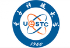
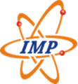

About Me
I am an experimental nuclear physicist studying the structure of exotic nuclei far from stability through radioactive-ion-beam (RIB) experiments. My research focuses on cluster structures, shell evolution, and multi-neutron correlations in light exotic nuclei, using quasi-free knockout and transfer reactions at world-leading facilities including RIKEN-RIBF (Japan), HIRFL-RIBLL (China), HIAF-HIRIBL (China, commissioning) and GANIL (France).
Education
-

2009 – 2013 Bachelor's University of Electronic Science and Technology of China — Chengdu, China -
2013 – 2016 Master's Peking University — Beijing, China
-
2016 – 2021 Ph.D. The University of Hong Kong — Hong Kong, China
Career
-
2025 – present Engineer Fudan University — Shanghai, China
-
2023 – present Visiting Scientist Spin-Isospin Laboratory, RIKEN Nishina Center — Wako, Japan
-

2021 – 2025 Postdoc Institute of Modern Physics, Chinese Academy of Sciences — Lanzhou, China
Research Projects
Awarded 96 h (RIBLL, 9,11Li t-cluster) and 70 h (RIBLL, boron isotopes) of beam time as PI.
Key Results
Molecular structure of 10Be ground state
Using the 10Be(p,pα)6He quasi-free knockout reaction at RIKEN-RIBF (150 MeV/u, SAMURAI spectrometer), we obtained the α-cluster wave function in the 10Be ground state and provided the first, most direct experimental evidence that nuclei can "clusterize" in their ground state — a molecule-like 2α+2n structure. The knockout cross section ∝ |ψ|². Phys. Rev. Lett. 131, 212501 (2023), Featured in Physics.
Shell evolution and deeply bound orbitals in neutron-rich Ca
Through quasi-free neutron knockout reactions 54,56Ca(p,pn) at RIBF, we obtained for the first time the single-particle strength of the deeply bound neutron 0f7/2 orbital in 54,56Ca, demonstrating the crucial role of the tensor force in shell evolution. Phys. Lett. B 855, 138828 (2024).
Multi-neutron correlations (4n and 6n)
Extending the α-knockout method, we measured 8He(p,pα) → "4n" and 14Be(p,pα)10He → α + "6n" knockout reactions, extracting the first clear 4n signal and the 6n missing-mass spectrum — key benchmarks for nuclear-force theories. M. Duer et al., Nature 606, 678 (2022) (collaborator, involved in experiment preparation and data taking); O. Nasr, D. Beaumel, P.J. Li et al., EPJ Web Conf. 342, 01020 (2025) (corresponding author).
Current & Future
(α,2α) quasi-free knockout at RIBLL1 (LENG)
As experiment leader, driving the 16C/18O(α,2α) quasi-free knockout experiment at Lanzhou RIBLL1 (71 h beam time; data taken in 2025, analysis ongoing). A self-developed 4He low-temperature gas target enables inverse-kinematics (α,2α) measurements. Founded the LENG collaboration (Low-temperature target system for Exotic Nuclei reactions with Gas) with IMP, PKU, BNU, BUAA and Fudan.
(p,pX) cluster knockout at HIAF-HIRIBL
At the new Huizhou HIAF-HIRIBL high-energy radioactive-ion beam line, a single projectile–target combination will deliver (p,pα), (p,pt) and (p,p3He) knockout reactions. Building on 10Be and 54Ca knockout experience, a DSSD+CsI(Tl) telescope array will yield differential cross sections and missing-mass spectra (HIAF produced beam in 2025). Developing a new-generation high-granularity, large solid-angle telescope array.
Boron cluster-structure evolution at RIKEN-RIBF
Using 11,13,15B(p,pX) (X = α, t, 6He) knockout at RIKEN-RIBF (200 MeV/u), probing cluster-structure evolution in boron isotopes — including neutron-rich non-α clusters (t, 6He) to extract weakly-bound cluster structures. As experiment leader, with the debugged TOGAXSI detector system, a liquid-hydrogen target, and the ONOKORO knockout collaboration.
Funds
-
National Key R&D Program of China — Young Scientist Project国家重点研发计划青年科学家项目
-
National Natural Science Foundation of China — Young Scientists Fund (Category C)国家自然科学基金青年科学基金项目（C类）
-
China Postdoctoral Science Foundation — International Exchange Program (Introduction Track)中国博士后科学基金国际交流计划引进项目
Publications
Full list on Google Scholar and ORCID.
- 1J.L. Jin, Q. Zhao, P.J. Li, M. Kimura, D. Beaumel, B. Zhou, J.L. Tian, “Effect of neutron-proton asymmetry on the 3H clustering in Boron isotopes,” arXiv 2604.25104 (2026). arXiv
- 2J. Bian, Z. Yang, Q. Li, Z. Du, X. Wang, N. Zhang, P.J. Li, Z. Shen, K. Zhou et al., “Application and optimization of the GET electronics system for double-sided silicon strip detector readout,” Nucl. Instrum. Meth. A (2026). DOI
- 3C. Yuan, F.S. Shi, X.D. Xu, Z.C. Zhang, E.Q. Liu, H.R. Yang et al. (incl. P.J. Li), “Development and application of position-sensitive double parallel-plate avalanche counter,” J. Instrum. 21, P05019 (2026). DOI
- 4C. Lehr, T. Aumann, M. Duer, A.T. Saito, T. Nakamura, N.L. Achouri, D. Ahn et al. (incl. P.J. Li), "Dipole Strength Distribution of 16C and Decay Characteristics," Phys. Rev. Lett. 136, 172501 (2026).
- 5S.W. Huang, C. Lenain, Z.H. Yang, F.M. Marqués, J. Gibelin, J.G. Li, A. Matta et al. (incl. P.J. Li), "Direct observation of three-neutron emission and the search for the trineutron," Phys. Rev. Research 8, L022003 (2026).
- 6H. Jian, X.X. Xu, K.L. Wang, J.J. Liu, C.Y. Fu, P.J. Li, Y.Y. Yang, G.X. Zhang et al., "Detector array with digital data acquisition system for charged-particle decay studies," Nucl. Sci. Tech. 36, 73 (2025/2026).
- 1O. Nasr, D. Beaumel, P.J. Li, L. Achouri, M. Assié, T. Aumann, H. Baba et al., “Resonances in 10He and the 6n system studied using SAMURAI,” EPJ Web Conf. 342, 01020 (2025). DOI
- 1P.J. Li, J. Lee, P. Doornenbal, S. Chen, S. Wang, A. Obertelli, Y. Chazono et al., “Spectroscopy of deeply bound orbitals in neutron-rich Ca isotopes,” Phys. Lett. B 855, 138828 (2024). DOI highlight
- 2M. Enciu, A. Obertelli, P. Doornenbal, M. Heinz, T. Miyagi, F. Nowacki, K. Ogata et al. (incl. P.J. Li), “Spectroscopy of 52K,” Phys. Rev. C 110, 064301 (2024). DOI
- 3J.H. Li, D.S. Hou, H.F. Zhu, R. Fan, X.X. Xu, X.H. Zhou, Z. Liu et al. (incl. P.J. Li), "Development of Gas Cell Cryogenic Purification System Operating at Prototype Spectrometer for Neutron-rich Superheavy Nuclei," Nuclear Physics Review 41(1), 135–140 (2024).
- 1P.J. Li, D. Beaumel, J. Lee, M. Assié, S. Chen, S. Franchoo, J. Gibelin et al., “Validation of the 10Be ground state molecular structure using 10Be(p,pα)6He triple differential reaction cross-section measurements,” Phys. Rev. Lett. 131, 212501 (2023). DOI highlight
- 1M. Duer, T. Aumann, R. Gernhäuser, V. Panin, S. Paschalis, D.M. Rossi, N.L. Achouri, D. Ahn, H. Baba et al. (incl. P.J. Li), “Observation of a correlated free four-neutron system,” Nature 606, 678 (2022). DOI
- 2M. Enciu, H.N. Liu, A. Obertelli, P. Doornenbal, F. Nowacki, K. Ogata et al. (incl. P.J. Li), “Extended p3/2 Neutron Orbital and the N = 32 Shell Closure in 52Ca,” Phys. Rev. Lett. 129, 262501 (2022). DOI
- 3J.J. Liu, X.X. Xu, L.J. Sun, C.X. Yuan, K. Kaneko, Y. Sun, P.F. Liang et al. (incl. P.J. Li), “Observation of a Strongly Isospin-Mixed Doublet in 26Si via β-Delayed Two-Proton Decay of 26P,” Phys. Rev. Lett. 129, 242502 (2022). DOI
- 4A.I. Stefanescu, V. Panin, L. Trache, T. Motobayashi, H. Otsu et al. (incl. P.J. Li), “Silicon tracker array for RIB experiments at SAMURAI,” Eur. Phys. J. A 58, 223 (2022).
- 1G.Z. Shi, J.J. Liu, Z.Y. Lin, H.F. Zhu, X.X. Xu, L.J. Sun, P.F. Liang et al. (incl. P.J. Li), “β-delayed two-proton decay of 27S at the proton-drip line,” Phys. Rev. C 103, L061301 (2021). DOI
- 2H. Jian, Y. Gao, F. Dai, J. Liu, X. Xu, C. Yuan, K. Kaneko et al. (incl. P.J. Li), “β-Delayed γ Emissions of 26P and Its Mirror Asymmetry,” Symmetry 13, 2278 (2021). DOI
- 3C.G. Wu, H.Y. Wu, J.G. Li, D.W. Luo, Z.H. Li, H. Hua, X.X. Xu et al. (incl. P.J. Li), “β-decay spectroscopy of the proton drip-line nucleus 22Al,” Phys. Rev. C 104, 044311 (2021). DOI
- 4S.W. Huang, Z.H. Yang, F.M. Marqués, N.L. Achouri, D.S. Ahn, T. Aumann, H. Baba et al. (incl. P.J. Li), “Experimental Study of 4n by Directly Detecting the Decay Neutrons,” Few-Body Syst. 62, 102 (2021).
- 5J.C. Zhang, X.X. Xu, C.J. Lin, Y. Taniguchi, M.K. Rai, N.K. Rai et al. (incl. P.J. Li), "Clustering structure in 9Be observed with the 9Be(p,pα) reaction," Phys. Rev. C 103, 064308 (2021).
- 1J. Lee, X.X. Xu, K. Kaneko, Y. Sun, C.J. Lin, L.J. Sun, P.F. Liang et al. (incl. P.J. Li), “Large Isospin Asymmetry in 22Si/22O Mirror Gamow-Teller Transitions Reveals the Halo Structure of 22Al,” Phys. Rev. Lett. 125, 192503 (2020). DOI
- 2L.J. Sun, X.X. Xu, S.Q. Hou, C.J. Lin, J. Jose, J. Lee et al. (incl. P.J. Li), “Experimentally well-constrained masses of 27P and 27S: Implications for studies of explosive binary systems,” Phys. Lett. B 802, 135213 (2020). DOI
- 3P.F. Liang, L.J. Sun, J. Lee, S.Q. Hou, X.X. Xu, C.J. Lin et al. (incl. P.J. Li), “Simultaneous measurement of beta-delayed proton and gamma emission of 26P for 25Al(p,γ)26Si reaction rate,” Phys. Rev. C 101, 024305 (2020). DOI
- 4W. Jiang, Y.L. Ye, C.J. Lin, Z.H. Li, J.L. Lou et al. (incl. P.J. Li), “Determination of the cluster-decay branching ratio from a near-threshold molecular state in 10Be,” Phys. Rev. C 101, 031304(R) (2020). DOI
- 1C. Wang, X.Q. Li, R. Han, Z.H. Li, H. Hua, S.Q. Zhang et al. (incl. P.J. Li), “A β-delayed neutron detection system working with the continuous beam mode,” Nucl. Instrum. Meth. A 940, 83 (2019). DOI
- 2L.J. Sun, X.X. Xu, C.J. Lin, J. Lee, S.Q. Hou, C.X. Yuan et al. (incl. P.J. Li), “β-decay spectroscopy of 27S,” Phys. Rev. C 99, 064312 (2019). DOI
- 3A.I. Chilug, V. Panin, D. Tudor, L. Trache, I.C. Stefanescu et al. (incl. P.J. Li), “Study of the 9C breakup through NP1412-SAMURAI29R1 experiment,” AIP Conf. Proc. 2076, 060001 (2019). DOI
- 4P.J. Li, D. Beaumel, “Cluster structure of neutron-rich beryllium isotopes investigated by cluster quasi-free scattering reaction,” RIKEN Accel. Prog. Rep. 52, 28 (2019).
- 1X.X. Xu, F.C.E. Teh, C.J. Lin, J. Lee, F. Yang et al. (incl. P.J. Li), “Characterization of CIAE developed double-sided silicon strip detector for charged particles,” Nucl. Sci. Tech. 29, 73 (2018). DOI
- 2Z.H. Yang, F.M. Marqués, N.L. Achouri, D.S. Ahn, T. Aumann, H. Baba et al. (incl. P.J. Li), “Study of multi-neutron systems with SAMURAI spectrometer,” Few-Body Problems in Physics, 529–534 (2018). DOI
- 3P. Li, Z.H. Li, Z.Q. Chen, J. Su, B. Guo, E.T. Li, Y.J. Li, Y.B. Wang et al., “A new determination of the 13C(α,n)16O reaction rate and its influence on the s-process,” Int. J. Mod. Phys. Conf. Ser. 46, 1860024 (2018).
- 1R. Han, X.Q. Li, W.G. Jiang, Z.H. Li, H. Hua, S.Q. Zhang et al. (incl. P.J. Li), “Northern boundary of the ‘island of inversion’ and triaxiality in 34Si,” Phys. Lett. B 772, 529 (2017). DOI
- 2W. Jiang, Y.L. Ye, Z.H. Li, C.J. Lin, Q.T. Li et al. (incl. P.J. Li), “High-lying excited states in 10Be from the 9Be(9Be,10Be)8Be reaction,” Sci. China Phys. Mech. Astron. 60, 062011 (2017). DOI
- 3P.J. Li, Z.H. Li, Z.Q. Chen, W. Hongyi, T. Zhengyang, J. Jiang, L. Jing, F. Jun, Z. Hongliang, L. Liu, N. Chenyang, T. Longchun, Z. Yun, S. Xiaohui, W. Xiang, L. Yang, L. Qite, L. Jianling, L. Xiangqing, H. Hui, J. Dongxing, Y. Yanlin, “Digital Pulse Shape Discrimination for Silicon Detector,” Nucl. Phys. Rev. 34(2), 0177 (2017).
- 4J. Li, Y.L. Ye, Z.H. Li, C.J. Lin, Q.T. Li et al. (incl. P.J. Li), “Selective decay from a candidate of the σ-bond linear-chain state in 14C,” Phys. Rev. C 95, 021303(R) (2017). DOI
- 5R. Han, X.Q. Li, W.G. Jiang, Z.H. Li, H. Hua, S.Q. Zhang et al. (incl. P.J. Li), “β-decay study of neutron-rich nucleus 34Al,” Sci. China Phys. Mech. Astron. 60, 042021 (2017).
- 6C.G. Li, Q.B. Chen, S.Q. Zhang, C. Xu, H. Hua, X.Q. Li et al. (incl. P.J. Li), “Observation of a novel stapler band in 75As,” Phys. Lett. B 766, 107 (2017). DOI
- 1J. Su, Z.H. Li, B. Guo, W.P. Tan, D. Patel, E.T. Li, Q.W. Fan, T. Kajino et al. (incl. P.J. Li), “Measurement of partial cross sections of 12C(p,p) and 12C(p,α) at astrophysical energies,” Phys. Rev. C 93, 035803 (2016). DOI
- 2S. Wang, Z.H. Li, P.J. Li, T.Y. Jiao, Y.T. Wang, J. Su, H.Y. Liang et al., “Fusion and direct reactions of the 9Be + 9Be system at sub-barrier energies,” Sci. China Phys. Mech. Astron. 59, 672011 (2016).
- 3Z.Y. Tian, Y.L. Ye, Z.H. Li, C.J. Lin, Q.T. Li et al. (incl. P.J. Li), “Cluster decay of the high-lying excited states in 14C,” Chin. Phys. C 40, 111001 (2016). DOI
Talks
- 2026-03InvitedStudy of new magic-number evolution and inversion-island physics in neutron-rich nuclei at HIRIBL — HIAF Day-One Experimental Workshop, Huizhou, China
- 2026-02InvitedInternational status of nuclear cluster-structure research — FESDON2026, Huizhou, China
- 2025-12TalkCluster structure of boron isotopes probed by (p,pX) cluster knockout reactions — PAC Meeting, RIKEN, Japan
- 2025-11TalkCluster structure of 12Be ground state probed by alpha-knockout reaction — Workshop on Nuclear Cluster Physics (WNCP2025), IMP, Huizhou, China
- 2024-06InvitedCluster structure of neutron-rich beryllium isotopes probed by cluster knockout reactions in inverse kinematics — Halo Week 2024, Gothenburg, Sweden
- 2024-01TalkExperimental study of cluster structure in the ground state of neutron-rich boron isotopes — 18th RIBLL Collaboration Meeting, Xinxiang, China
- 2023-12TalkFeasibility study of inverse-kinematics (p,pX) knockout experiments at HFRS — Symposium on Radioactive Beam Physics at HFRS, Huizhou, China
- 2023-11InvitedValidation of the ground-state molecular structure of 10Be using the (p,pα) reaction — Workshop on Nuclear Cluster Physics, Osaka, Japan
- 2023-08PosterSpectroscopy of deeply bound orbitals in neutron-rich Ca isotopes — DIRECT 2023, York, UK
- 2023-07InvitedCluster structure of neutron-rich beryllium isotopes probed by (p,pα) knockout reactions in inverse kinematics — DIRECT 2023, York, UK
- 2023-07TalkStudy of triton cluster structure in the ground state of neutron-rich 9,11Li — RIBLL Collaboration Meeting, Yongjing, China
- 2023-06PosterCluster structure of neutron-rich beryllium isotopes probed by cluster knockout reactions in inverse kinematics — ARIS 2023, Avignon, France
- 2023-05TalkCluster structure of neutron-rich beryllium isotopes probed by cluster knockout reactions in inverse kinematics — National Nuclear Physics Conference, Huzhou, China
- 2022-08TalkCluster structure of neutron-rich beryllium isotopes probed by cluster knockout reactions in inverse kinematics — National Nuclear Reaction Conference, Guiyang, China (Youth Outstanding Presentation Award)
- 2022-06TalkCluster structure of neutron-rich beryllium isotopes probed by cluster knockout reactions in inverse kinematics — DREB2022, Santiago de Compostela, Spain (Online)
- 2021-08TalkCluster structure of neutron-rich Be isotopes using the (p,pα) reaction in inverse kinematics — SAMURAI International Collaboration Workshop, Tokyo, Japan (Online)
- 2019-09TalkCluster structure of neutron-rich Beryllium isotopes investigated by cluster quasi-free scattering reaction — SAMURAI International Collaboration Workshop, Tokyo, Japan
- 2018-10TalkSi-GET Project in HKU — GET Workshop: General Electronics for Physics, Bordeaux, France
- 2018-07TalkClustering in the Ground State of Neutron-rich Be isotopes — Joint Annual Conference of Physical Societies in the Bay Area, Macau, China
- 2015-07TalkDigital pulse-shape discrimination for silicon detectors — National Nuclear Reaction Conference, Guiyang, China